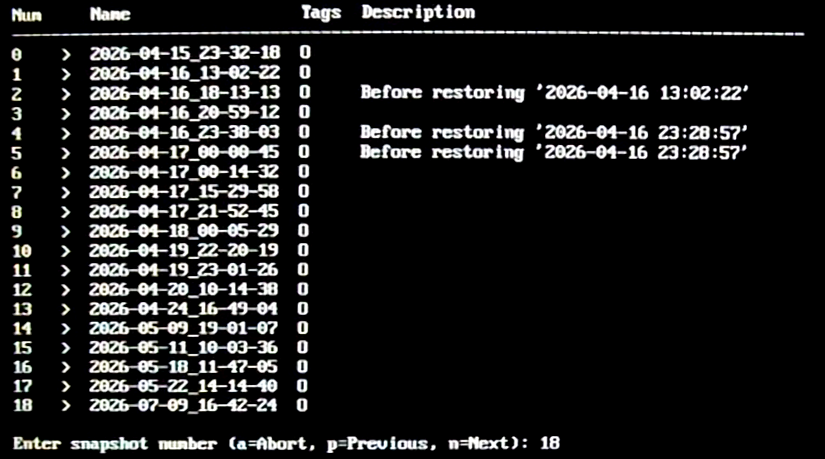
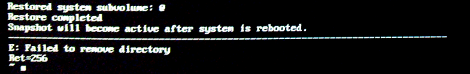
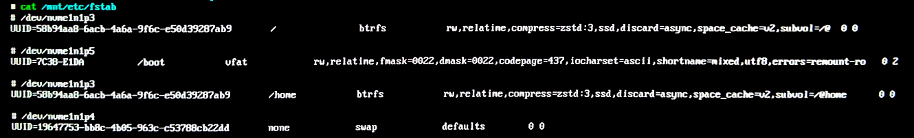
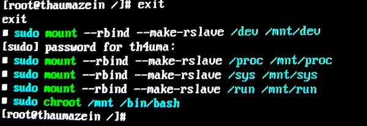
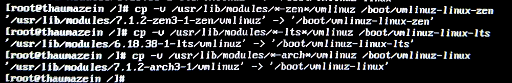
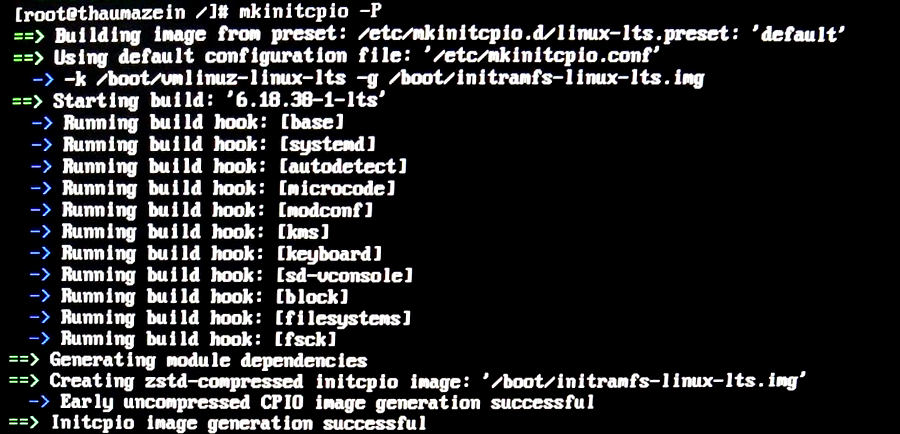

前言
隔了三个月没用Arch，进入后遇到了yay报错，滚了一下甚至直接挂掉了，还好前段时间保存过快照，这次便记录一下恢复的过程，与后续通过codex辅助搭建更适合我的环境
回滚系统
文字终端
我的情况是卡在了进入图形界面前，也就是左上角有一个光标，鼠标可以在屏幕上移动的状态，按 Ctrl + Alt + F3 切换到文字终端，出现 login: 后输入Arch用户名，Password: 输入这个账户的登录密码
可以正常登录，说明系统已经启动到能运行命令的阶段，不需要通过Live USB也能恢复。登录后查看一下SDDM的日志
|
|
没有SDDM启动失败信息，就直接恢复快照
Timeshift恢复
启动Timeshift的交互式恢复
|
|
由于GRUB还能正常引导到Arch，用 --skip-grub 跳过重新安装引导程序。输入一个更新之前能正常使用的快照序号

检查将恢复的内容。这里显示的是 /dev/nvme1n1p3(@)，挂载点为 /，没有包含 @home，也就是只恢复系统，家目录保持原来的状态。确认后输入 y
末尾又出现了 Failed to remove directory和 Ret=256，但上面已经显示系统子卷恢复完成，之后也能正常挂载恢复出的系统，所以没有重新执行回滚

btrfs模式会将原来的
@移到恢复前快照目录，再从选中的快照创建一个新的@。当前终端还在原来的系统中运行，重启以后才会使用恢复出的系统确认页面虽然写着恢复后会重启，但这次恢复完成后直接回到了终端，并没有自动重启
同步启动文件
挂载恢复后的系统
我的根目录使用btrfs，但EFI分区单独挂载在/boot。这次回滚只恢复了根子卷，独立分区里的启动文件还需要另外处理
根子卷的快照不包含单独挂载的
/boot分区。如果只恢复根目录，启动时可能加载更新后的内核，而系统里的内核模块已经退回旧版，两边就对不上了
把恢复出的@挂载到/mnt
|
|
查看它的挂载表
|
|

这里可以看到我的挂载关系如下
| 挂载点 | 分区 | 文件系统 | 子卷 |
|---|---|---|---|
/ |
/dev/nvme1n1p3 |
Btrfs | @ |
/home |
/dev/nvme1n1p3 |
Btrfs | @home |
/boot |
/dev/nvme1n1p5 |
vfat | 无 |
进入chroot
挂载启动分区
|
|
把当前系统的设备和虚拟文件系统挂载进去
|
|
进入恢复出的系统环境
|
|
提示符变成 [root@thaumazein /]#，之后的命令就在恢复出的系统里面执行

将三个内核分别复制到 /boot对应的位置
|
|

initramfs是启动早期使用的临时根文件系统，里面包含挂载真正根目录所需的驱动和工具。内核退回旧版以后，也需要重新生成与它匹配的镜像
根据全部预设重新生成initramfs镜像
|
|
显示生成成功

退出chroot，卸载后重启
|
|
重启后成功进入KDE Plasma，终端也可以正常使用，系统恢复成功
恢复后的软件安装
回到桌面以后也不敢马上再执行 pacman -Syu，准备先处理需要的软件，结果又碰到了数据库锁和命令找不到的问题
Pacman数据库锁
使用yay构建软件包过程中出现了大量这样的报错
|
|
|
|
这部分发生在生成调试索引时，No debugging symbols说明对应文件没有可用的调试符号。electron32-bin本身是预编译的软件包，这次虽然刷了很多报错，但后面依旧显示
|
|
也就是软件包已经构建成功，刚刚的调试索引报错没有让这次构建中止
构建结束后又卡在了这里，等了大约一小时也没有进展
|
|
db.lck是Pacman的数据库锁，用来防止多个包管理进程同时修改数据库。正常结束后会释放，异常中断时则可能留下锁文件，因此需要先确认有没有其他安装或更新正在进行
新开一个Konsole标签页，查看相关进程
|
|
我这里只看到了正在等待的 yay -S electron32-bin，没有发现其他Pacman进程在运行，判断大概率是残留锁。确认没有其他进程正在修改数据库后，删除锁文件
|
|
原来的yay终端立即继续执行
安装Codex CLI
虑到刚刚才处理过Pacman和AUR的问题，这里用了独立安装脚本
|
|
显示安装成功，安装到的版本是 0.166.0。脚本询问要不要立即启动，输入 y后却没有正常进入，手动运行也找不到命令
|
|
安装脚本已经把路径写进了
~/.zshrc，但当前的Zsh还没有重新加载配置，因此当前PATH中没有Codex的路径
重新加载配置后再运行
|
|